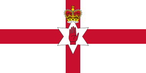
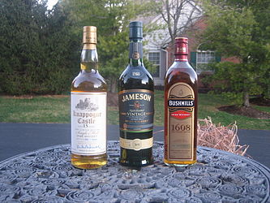
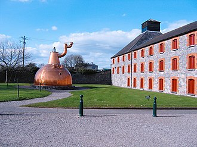

Want to start a trip? Click the flag on the right to log in!

Let's go to Northern Ireland together!
Belfast (from Irish: Beal Feirste, meaning 'mouth of the sand-bank ford') is the capital and largest city of Northern Ireland, standing on the banks of the River Lagan on the east coast. It is the 12th-largest city in the United Kingdom and the second-largest in Ireland. It had a population of 343,542 as of 2019. Belfast suffered greatly during the violence that accompanied the partition of Ireland, and especially during the more recent conflict known as the Troubles.
By the early 19th century, Belfast was a major port. It played an important role in the Industrial Revolution in Ireland, becoming briefly the biggest linen-producer in the world, earning it the nickname "Linenopolis". By the time it was granted city status in 1888, it was a major centre of Irish linen production, tobacco-processing and rope-making. Shipbuilding was also a key industry; the Harland and Wolff shipyard, which built the RMS Titanic, was the world's largest shipyard. Belfast as of 2019 has a major aerospace and missiles industry. Industrialisation, and the inward migration[8] it brought, made Belfast Northern Ireland's biggest city. Following the partition of Ireland in 1922, Belfast became the seat of government for Northern Ireland. Belfast's status as a global industrial centre ended in the decades after the Second World War.
Belfast Harbour is a major maritime hub in Northern Ireland, handling 67% of Northern Ireland's seaborne trade and about 25% of the maritime trade of the entire island of Ireland. It is a vital gateway for raw materials, exports and consumer goods, and is also Northern Ireland's leading logistics and distribution hub. The Belfast Harbour Estate is home to many well-known Northern Ireland businesses such as George Best Belfast City Airport, Harland and Wolff, Bombardier Aerospace, Odyssey, the Catalyst Inc, Titanic Quarter and Titanic Belfast. Over 700 firms employing 23,000 people are located within the estate.
It is increasingly popular with cruise liners, with 2016 due to be the busiest cruise season in the city's history with over 145,000 passengers and crew due to visit, representing a 26% increase in visitor numbers compared with 2015. The 2 cruise berths that are used are the Pollock dock, named after Northern Irish politician Hugh MacDowell Pollock, for smaller ships and the Stormont Wharf (deep water berth) for larger ships, The extended Stormont Wharf was opened on 30 June 2009 by the Grand Princess.
|
Irish whiskey (Irish: Fuisce or uisce beatha) is whiskey made on the island of Ireland. The word 'whiskey' (or whisky) comes from the Irish uisce beatha, meaning water of life.Irish whiskey was once the most popular spirit in the world, though a long period of decline from the late 19th century onwards greatly damaged the industry,[4] so much so that although Ireland boasted at least 28 distilleries in the 1890s, by 1966 this number had fallen to just two, and by 1972 the remaining distilleries, Bushmills Distillery and Old Midleton Distillery (replaced by New Midleton Distillery), were owned by just one company, Irish Distillers. |
 |
 |